- Aller dans le menu : Applications > Système > Gestionnaire de paquets Synaptic
- Une fenêtre apparait, Authentification requise avec le mot de passe pour Root (superutilisateur)
- Saisir le mot de passe pour Root (superutilisateur) et valider avec Entrée ou
cliquer > S'authentifier - A la première ouverture du Gestionnaire de paquets Synaptic, la fenêtre de présentation rapide apparaît.
Lire et cliquer > Fermer (il se peut que cette fenêtre n'apparaisse pas.) - L'application de Synaptic apparaît, composée de 6 zones :
- Barre de menus : Fichier, Edition, Paquets, Configuration, Aide.
- Barre d'outils : Permet les actions principales. Recharger, Tout mettre à niveau, etc...
- Sélecteur de catégorie : Affine la liste des paquets
- Liste des paquets : Répertorie les paquets connus. Peut être optimisé à l'aide de filtres.
- Champ de description : Affiche la description du paquet sélectionné.
- Barre d'état : Affiche des informations globales sur l'état de Synaptic.
- Cliquer en haut à gauche > Recharger
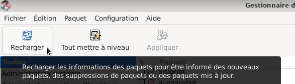
- Une fenêtre apparaît, attendre la fin du téléchargement.
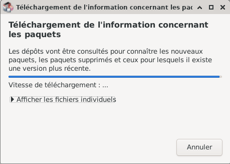
- Cliquer en haut à gauche > Tout mettre à niveau
- Une fenêtre apparaît avec la liste des paquets qui vont être mis à jour.
Nota : La liste de mise à jour ne sera pas la même que ci-dessous. - Ciquer dans la fenêtre > Ajouter à la selection
La fenêtre disparaît. a) En haut à gauche "Appliquer" doit être en noir et non grisé.
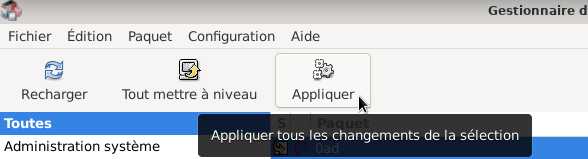
b) Si "Appliquer" est grisé, ne rien faire le système est à jour. Passer à l'étape 14.- Cliquer > Appliquer, une fenêtre apparaît indiquant :
C'est votre dernière chance de parcourir la liste des changements prévus avant qu'ils ne soient appliqués. - Cliquer > Appliquer, des fenêtres vont apparaître, indiquant :
Application des changements en cours, laisser faire. - Un message informe que les modifications ont été appliquées, Fermer la fenêtre
- Fermer l'application Synaptic en haut à gauche : Fichier > Quitter


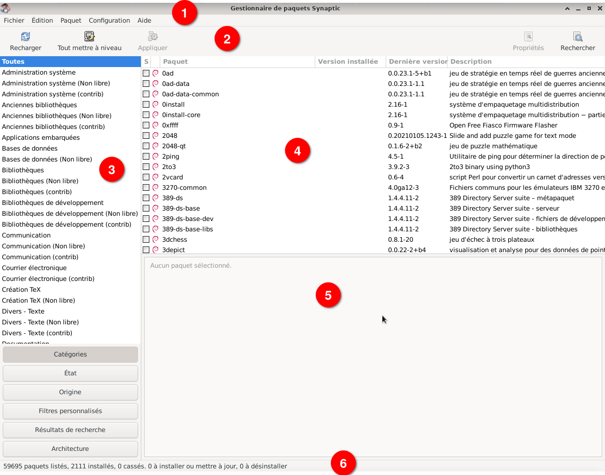
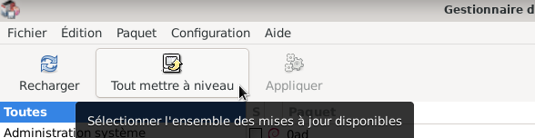
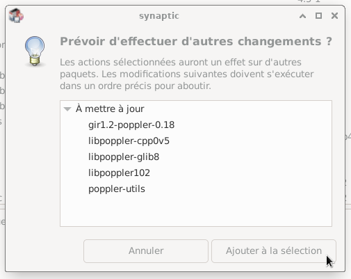
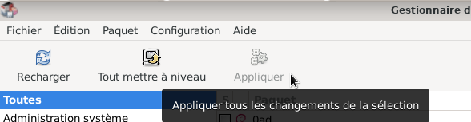
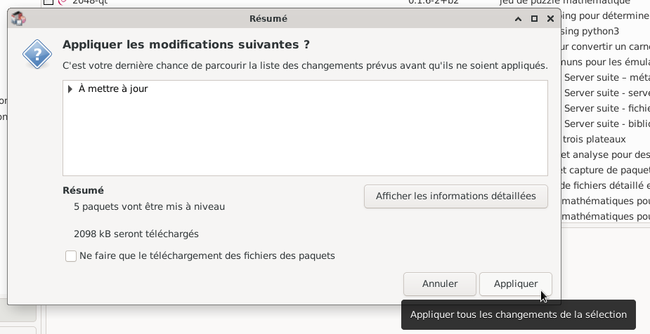
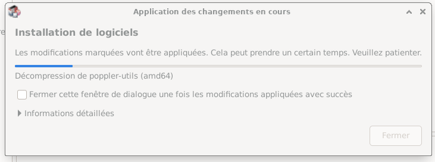
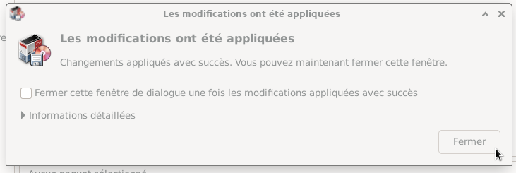
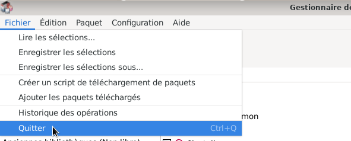